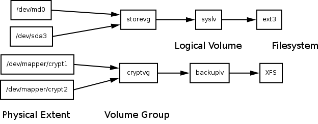

Encrypted Storage with LUKS, RAID and LVM2
Some people have a need for storing data securely. Sometimes this means not only redundant disks (and a good backup strategy) but also encryption. Fortunately, the Linux kernel has all the features to use multiple RAID devices, pool them to a Logical Volume, and encrypt every block of the filesystem. Just don't forget your passphrase!
Creating RAID devices
The first step involves the creation of a Linux software RAID device. For the sake of simplicity we will stick to RAID level 1, i.e. mirroring two disks or disk partitions. A RAID1 can be done with any two (or more) parts of block devices that have the same size. Usually you mark these partitions when installing the system. The installers of most GNU/Linux distributions have an editor that allows you to do this. We will assume that we already have a system, and prepare four partitions for the use of two RAID1 devices. You simply have to edit the partition table. I like to use the cfdisk tool for that.
osiris:~# cfdisk /dev/sdcPrepare your partitions and mark them with the type code FD. This code marks the partitions as Linux RAID autodetect and allows the system to activate them at boot time. Remember, all the partitions should be of the same size.
osiris:~# cfdisk /dev/sddI chose /dev/sdc1 and /dev/sdd1. Now let's create the RAID. You will need the mdadm tool for this.
osiris:~# mdadm --create /dev/md6 --level=1 --raid-devices=2 /dev/sdc1 /dev/sdd1After pressing enter the kernel creates the device and starts synchronising the blocks. You can check the progress of this operation by looking into /proc/mdstat. This file gives you status of all RAID devices in the system.
osiris:~# cat /proc/mdstat
Personalities : [raid1]
md1 : active raid1 sdb2[1] sda2[0]
3903680 blocks [2/2] [UU]
md5 : active raid1 sdb3[1] sda3[0]
4883648 blocks [2/2] [UU]
md2 : active raid1 sdb5[1] sda5[0]
1951744 blocks [2/2] [UU]
md4 : active raid1 sdb7[1] sda7[0]
297435328 blocks [2/2] [UU]
md6 : active raid1 sdd1[1] sdc1[0]
488383936 blocks [2/2] [UU]
md0 : active raid1 sdb1[1] sda1[0]
489856 blocks [2/2] [UU]
unused devices:
osiris:~#
If you see an output like this, the RAID devices are in a consistent state. The
mdadm packages provides utilities for monitoring the state of RAIDs.
This is very useful otherwise you may not notice when your disks and your RAID
is dying.
Now create a second RAID device. I use /dev/md4 from the output above as the second device to be added to our encrypted logical volume.
Encrypting the Block Devices
Our tool of choice will be cryptsetup for enabling encryption. Before you use block devices as encrypted storage, it is recommended that you overwrite them with random bit patterns. The easiest way to do this is by using dd.
osiris:~# dd if=/dev/urandom of=/dev/md4 osiris:~# dd if=/dev/urandom of=/dev/md6Depending on your hardware this can take several hours. Make sure not to use /dev/random or these commands will take several days or weeks. You don't have to do this. However if you leave any recognisable pattern on the device, it is easier to spot the encrypted blocks, and concentrate code breaking on them.
After your disks have been overwritten with random garbage you can encrypt them.
osiris:~# cryptsetup -c aes-cbc-essiv:sha256 -y -s 256 luksFormat /dev/md4 osiris:~# cryptsetup -c aes-cbc-essiv:sha256 -y -s 256 luksFormat /dev/md6Make sure you don't forget your passphrase! If you forget it, your data is pretty secure and unrecoverable. Bear in mind encrypting data and throwing the keys away is the industrial standard for data destruction (of course assuming that you are using something better than ROT13 or XOR). The block devices are now ready for encryption.
The commands above initialise the devices for use with the AES algorithm. The key length is 256 bit, and we use a method called ESSIV or E(Sector|Salt) in order to avoid weaknesses in the choice of initial values for the encryption algorithm.
Unlocking the Block Devices
Every time you wish to use your encrypted block devices you have to unlock them. That's the idea. Unlocking can also be done with cryptsetup.
osiris:~# cryptsetup luksOpen /dev/md4 crypt1 osiris:~# cryptsetup luksOpen /dev/md6 crypt2You will be prompted for your passphrase. After unlocking, the devices can be accessed by using /dev/mapper/crypt1 and /dev/mapper/crypt2. Note that we won't use the RAID devices directly anymore. We access the storage space through an encryption layer. The data stored in the blocks of our RAID is encrypted.
Pooling Block Devices into a Logical Volume
The Logical Volume Manager (LVM) is a tool for combining multiple physical block devices into volume groups, and for creating logical volumes out of them. The LVM2 has its own HOWTO where everything is explained in great detail. We only need to know how the storage areas are organised. The order is as follows.
- Physical extents (block devices, partitions)
- Volume groups (consisting of physical extents)
- Logical volumes (combining parts of volume groups)

Ok, so let's mark our encrypted RAID1 devices as physical extents and create a volume group.
osiris:~# pvcreate /dev/mapper/crypt1 osiris:~# pvcreate /dev/mapper/crypt2 osiris:~# vgcreate -v cryptvg /dev/mapper/crypt1 /dev/mapper/crypt2The commands pvscan and vgdisplay shows you the result of the commands above. The vgdisplay is especially useful since it shows you the number of physical extents available in a volume group. We now want to use the complete volume group cryptvg for a logical volume. Therefore we tell lvcreate the number of extents to use.
osiris:~# lvcreate -l 191849 -n backuplv cryptvgThat's all we need. Our new logical volume can now be accessed by the device file /dev/backup/backuplv. We format this device with an XFS filesystem (of course you can use whatever filesystem you wish, XFS is just an example).
osiris:~# mkfs.xfs -d agcount=48 -L backup /dev/backup/backuplvThat's it. We can now mount this volume and use it as we like. Don't forget to write an entry for your /etc/fstab in order to have all mount options ready. A possible configuration would be like this one:
/dev/backup/backuplv /backup xfs ikeep,noatime 0 0
Mounting and umounting
You have to do some steps to activate and deactive your new encrypted volume. Most things will be taken care of by the Linux kernel (such as autodetecting the RAID devices and starting them). Some things can't be taken care of automatically. Here is a simple script that does all the necessary steps.
#!/bin/sh echo "Unlocking /dev/md4" cryptsetup luksOpen /dev/md4 crypt1 echo "Unlocking /dev/md6" cryptsetup luksOpen /dev/md6 crypt2 echo "Scanning for volume groups" vgscan --mknodes vgchange -ay echo "Mounting /backup" mount /backupcryptsetup will ask you once per RAID device for your passphrase(s). The shutdown sequence is the reverse order.
#!/bin/sh umount /backup # Mark the logical volume INACTIVE (can be restored with 'lvchange -ay') lvchange -an backuplv # Mark the volume group INACTIVE (can be restored with 'vgchange -ay') vgchange -an cryptvg cryptsetup remove crypt1 cryptsetup remove crypt2Most GNU/Linux distributions have start/stop scripts that can take care of the activation and deactivation sequences. Nevertheless it's good to know how to do it (maybe for cases when the system isn't available anymore).
Important: Field Tests
Now that your new shiny encrypted logical volume is empty, you have a once in a lifetime chance of testing the storage mechanism. Don't miss to do this! Try simulating a disk failure. Switch off the power and reboot. Do a filesystem check. Create thousands of files and delete them. Copy loads of big ISO images. Do whatever could happen to your storage and see if your data is still there. XFS' mkfs command has the -p switch that allows you to populate a freshly created XFS filesystem with files and directories according to a prewritten description of the filesystem layout. This is a very useful feature for testing. Use it. Simulate everything that can go wrong. When you are satisfied with your testing, put your valuable data on it. And always keep backups.
Useful links
No blocks or disks were harmed while preparing this article. You might wish to take a look at the following tools and articles suitable to encrypt yourself to death.
- Linux: Why software RAID?
- Linux hard disk encryption settings
- LUKS - Linux Unified Key Setup
- LVM HOWTO
- Why Mainline Cryptoloop Should Not Be Used
- The Software-RAID HOWTO
- XFS: A high-performance journaling filesystem
Talkback: Discuss this article with The Answer Gang

René was born in the year of Atari's founding and the release of the game Pong. Since his early youth he started taking things apart to see how they work. He couldn't even pass construction sites without looking for electrical wires that might seem interesting. The interest in computing began when his grandfather bought him a 4-bit microcontroller with 256 byte RAM and a 4096 byte operating system, forcing him to learn assembler before any other language.
After finishing school he went to university in order to study physics. He then collected experiences with a C64, a C128, two Amigas, DEC's Ultrix, OpenVMS and finally GNU/Linux on a PC in 1997. He is using Linux since this day and still likes to take things apart und put them together again. Freedom of tinkering brought him close to the Free Software movement, where he puts some effort into the right to understand how things work. He is also involved with civil liberty groups focusing on digital rights.
Since 1999 he is offering his skills as a freelancer. His main activities include system/network administration, scripting and consulting. In 2001 he started to give lectures on computer security at the Technikum Wien. Apart from staring into computer monitors, inspecting hardware and talking to network equipment he is fond of scuba diving, writing, or photographing with his digital camera. He would like to have a go at storytelling and roleplaying again as soon as he finds some more spare time on his backup devices.